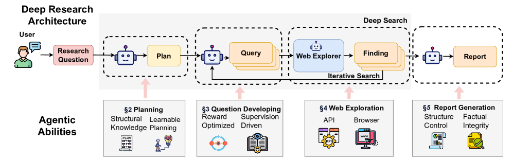
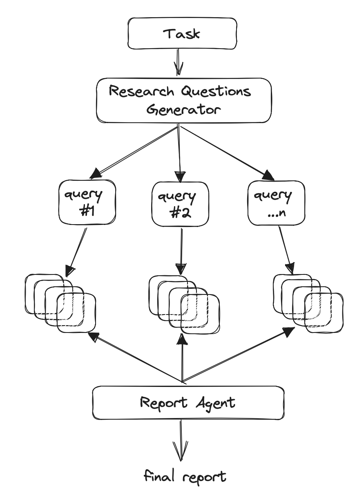
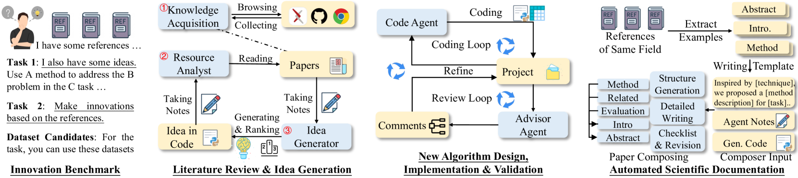
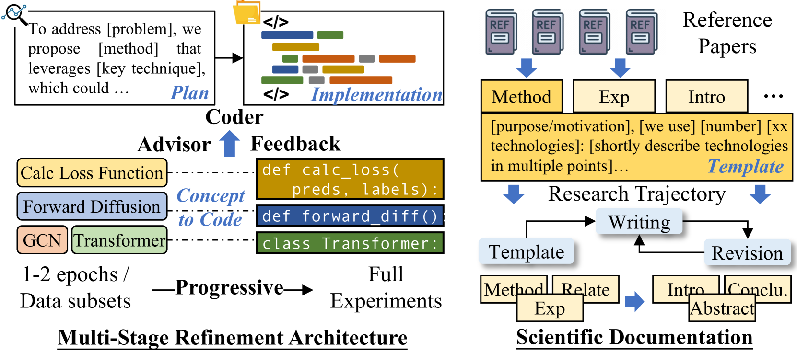
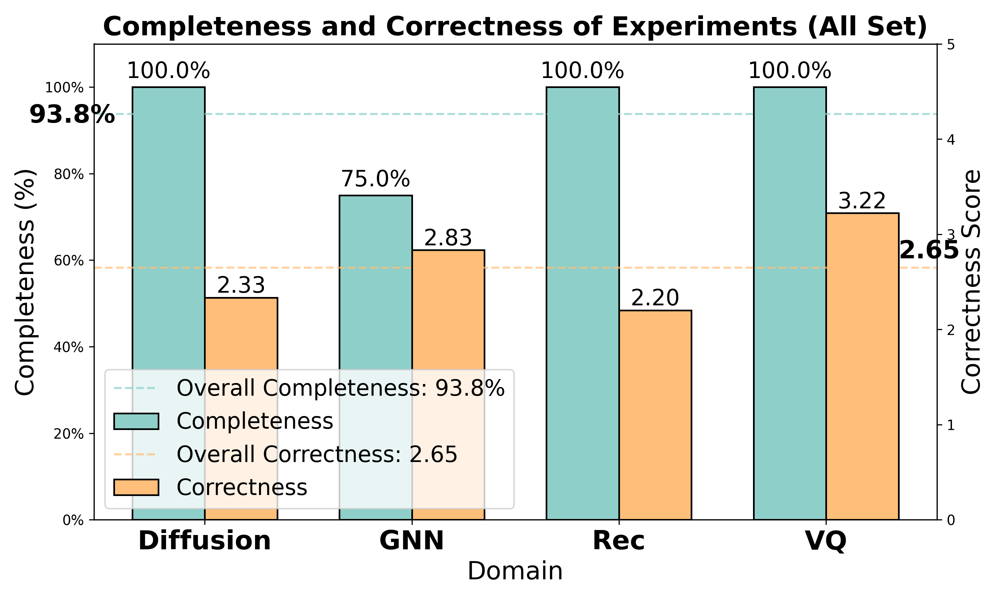
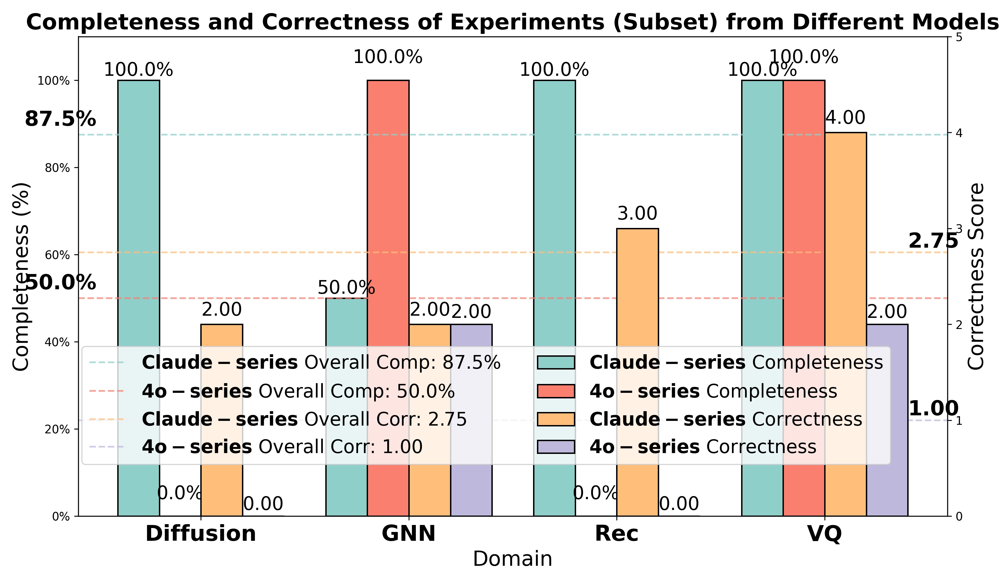

Andrej Karpathy (karpathy/autoresearch, March 2026); Assaf Elovic (GPT-Researcher, 2023); Wenlin Zhang et al. (Deep Research Survey, 2025); practitioners across multiple venues.
| Dimension | Prior State | This Paper | Key Result |
|---|---|---|---|
| Research automation | Manual query-answer with single LLM call | Closed agentic loop: propose → execute → evaluate → iterate | ~700 experiments overnight, 11% improvement on GPT-2 training benchmark |
| Scope of search | Single retrieval pass, no iteration | Recursive tree-structured retrieval with query reformulation | BFS/DFS hybrid cuts redundant queries; frequency-consensus reduces hallucination |
| Evaluation signal | Human judgment, offline evals | Fixed proxy metric in immutable harness (val_bpb) | Metric gaming isolated by scope containment + held-out eval |
| Systems available | Closed commercial tools | Open-source: GPT-Researcher (25.7k stars), AI-Scientist-v2, karpathy/autoresearch | 93.8% implementation completeness on Scientist-Bench (AI-Researcher) |
Relations
Builds on: papers/multi-agent-design|Multi-Agent Design Patterns Concepts used: concepts/neural-scaling-laws/note|Neural Scaling Laws, concepts/mixture-of-experts/note|Mixture of Experts
Table of Contents
- #1. What is Autoresearch|1. What is Autoresearch
- #2. The Core Loop|2. The Core Loop
- #3. Key Components|3. Key Components
- #4. Design Patterns and Strategies|4. Design Patterns and Strategies
- #4.1 Breadth-First vs. Depth-First Exploration|4.1 Breadth-First vs. Depth-First Exploration
- #4.2 Query Reformulation|4.2 Query Reformulation
- #4.3 Source Deduplication and Frequency Consensus|4.3 Source Deduplication and Frequency Consensus
- #4.4 Scope Containment and Revert Semantics|4.4 Scope Containment and Revert Semantics
- #4.5 Reflection Prompts|4.5 Reflection Prompts
- #5. Failure Modes and Mitigations|5. Failure Modes and Mitigations
- #5.1 Hallucination and Factual Drift|5.1 Hallucination and Factual Drift
- #5.2 Context Saturation|5.2 Context Saturation
- #5.3 Rabbit-Holing and Plan Brittleness|5.3 Rabbit-Holing and Plan Brittleness
- #5.4 Metric Gaming and Reward Hacking|5.4 Metric Gaming and Reward Hacking
- #5.5 Source Quality and Prompt Injection|5.5 Source Quality and Prompt Injection
- #6. Practical Implementations|6. Practical Implementations
- #7. Evaluation|7. Evaluation
- #8. References|8. References
1. What is Autoresearch
1.1 Definition
💡 Definition (Autoresearch). Autoresearch is an autonomous AI workflow in which an LLM-backed agent iterates through cycles of query formulation, evidence retrieval, reading, reflection, and synthesis — without human intervention between cycles — until a termination criterion is met. The output is a grounded artifact: a research report, an optimized training script, a set of hypotheses, or any other verifiable product of systematic inquiry.
The term entered broad usage in March 2026 when Andrej Karpathy published karpathy/autoresearch, a minimal demonstration of the pattern applied to ML training optimization. The concept is, however, broader: GPT-Researcher (Assaf Elovic, 2023) and Sakana AI’s AI Scientist (2024) instantiate the same pattern for open-domain literature synthesis and scientific hypothesis generation respectively.
Two flavors of autoresearch are worth distinguishing from the outset:
| Flavor | Domain | Mutation Target | Fitness Signal |
|---|---|---|---|
| Experimental optimization | ML training | Source code / hyperparameters | Proxy metric (val_bpb, accuracy) |
| Literature synthesis | Any knowledge domain | Research queries / report draft | Coverage, citation precision, coherence |
Both share the same underlying loop structure; they differ only in what is mutated and how fitness is measured.
1.2 Contrast with Naive LLM Querying
A single-pass LLM query — “tell me about topic X” — suffers from two structural limitations:
- Fixed context horizon: the LLM can only reason over information already in its training distribution or a single retrieved chunk. No new evidence is incorporated during generation.
- No self-correction: the model cannot detect when its output contradicts a retrieved source or when a knowledge gap remains unaddressed.
Autoresearch replaces this one-shot pass with a closed feedback loop. The agent maintains a growing evidence buffer, detects gaps through reflection, issues follow-up queries, and revises its synthesis. This mirrors the structure of human scientific inquiry: form hypothesis → gather evidence → update belief → repeat.
1.3 Information-Theoretic Motivation
Let \(H(T)\) denote the entropy of the answer to a research task \(T\), and let \(I_k\) denote the mutual information between the \(k\)-th retrieved document and \(T\). A single retrieval pass yields expected information gain
\[\mathbb{E}[I_1] = I(D_1; T)\]
where \(D_1\) is drawn from the retrieval distribution induced by the initial query \(q_0\). After \(n\) independent retrieval steps, the total information about \(T\) in the evidence buffer is (assuming approximate independence of retrieved documents)
\[\sum_{k=1}^{n} I(D_k; T \mid D_1, \ldots, D_{k-1}).\]
Heuristically, each additional step has diminishing marginal gain — a saturation effect — unless the agent adapts its queries based on what it has already learned. Query reformulation is the mechanism that maintains high marginal information gain across iterations: by conditioning each new query \(q_k\) on the current evidence buffer \(\mathcal{E}_{k-1}\), the agent steers retrieval toward the residual uncertainty in \(T\).
Iterative retrieval with adaptive query reformulation provides strictly higher expected coverage of \(H(T)\) than any fixed query set of the same size — assuming the LLM’s query proposals are positively correlated with the actual residual uncertainty. This is the information-theoretic justification for the loop.
2. The Core Loop
2.1 The Canonical Five-Step Cycle
🔄 The agentic research cycle consists of five stages executed repeatedly until termination:
- Plan / Decompose: Given task \(T\), decompose it into a set of sub-questions \(\{q_1, \ldots, q_m\}\) that jointly cover \(T\). In experimental optimization, this step is replaced by a mutation proposal.
- Search / Retrieve: For each \(q_i\), execute search tool calls (API or browser) to retrieve a candidate document set \(\mathcal{D}_i\).
- Read / Extract: Scrape, parse, and compress each document into evidence summaries \(\{e_{i,j}\}\), discarding irrelevant material.
- Reflect / Evaluate: Assess whether the accumulated evidence \(\mathcal{E} = \bigcup_{i,j} e_{i,j}\) sufficiently answers \(T\). Identify remaining gaps \(G\).
- Iterate or Terminate: If \(G \neq \emptyset\) and budget remains, reformulate queries from \(G\) and return to step 2. Otherwise, synthesize \(\mathcal{E}\) into the final output.

Figure 1 (Zhang et al., Deep Research Survey, 2025): High-level architecture of a deep research system. The pipeline stages — Plan, Query, Web Explorer (iterative search), Finding, and Report — map directly onto the five-step cycle above. The lower tier lists the agentic capabilities each stage demands: structural/learnable planning, reward/supervision-driven question development, API/browser-based web exploration, and factual/integrity-controlled report generation.flowchart TD
T["Research Task T"]
T --> Plan["1. Plan / Decompose<br/>sub-questions {q_i}"]
Plan --> Search["2. Search / Retrieve<br/>docs D_i per q_i"]
Search --> Read["3. Read / Extract<br/>evidence summaries e"]
Read --> Reflect["4. Reflect / Evaluate<br/>gaps G, coverage score"]
Reflect --> Check{"gaps remain<br/>and budget?"}
Check -->|yes| Reformulate["reformulate queries from G"]
Reformulate --> Search
Check -->|no| Synthesize["5. Synthesize Output"]2.2 Formal Pseudocode
def autoresearch(task: str, budget: int) -> str:
evidence: set[str] = set() # evidence buffer
queries: list[str] = decompose(task) # initial sub-question set
for _ in range(budget):
gaps = reflect(task, evidence) # identify residual gaps
if not gaps:
break
for q in queries:
for doc in search(q):
evidence.add(read_and_compress(doc))
queries = reformulate(gaps, evidence) # new queries targeting gaps
return synthesize(task, evidence)
def reflect(task: str, evidence: set[str]) -> list[str]:
# prompt LLM: "Given task T and evidence E,
# list the questions that remain unanswered."
return llm(reflect_prompt(task, evidence))
def reformulate(gaps: list[str], evidence: set[str]) -> list[str]:
# prompt LLM: "Given gaps G and what we know E,
# generate search queries to resolve each gap."
return llm(query_gen_prompt(gaps, evidence))This pseudocode is intentionally model-agnostic. In Karpathy’s ML-optimization variant, SEARCH becomes RUN_EXPERIMENT, READ_AND_COMPRESS becomes EVALUATE_METRIC, and SYNTHESIZE becomes COMMIT_BEST_WEIGHTS.
2.3 Convergence and Termination
The loop has no guaranteed convergence in the information-retrieval sense: the evidence buffer \(\mathcal{E}\) can grow without bound, and the LLM’s GAPS function may generate new sub-questions faster than existing ones are resolved (the rabbit-holing failure mode, treated in §5.3).
Practical termination criteria include:
- Hard budget: maximum iterations \(B\) or wall-clock time \(\tau\).
- Metric plateau: in experimental optimization, halt when \(\Delta(\text{metric}) < \epsilon\) for \(k\) consecutive iterations.
- Gap saturation: halt when \(|G| = 0\) or when all gaps are classified as “low priority.”
- Context capacity: halt when \(|\mathcal{E}|\) approaches the LLM context window \(L\) (§3.4).
In practice, hard budget constraints dominate — most systems run for a fixed number of iterations or a fixed wall-clock window (e.g., overnight). This is a pragmatic simplification that trades completeness for reproducibility.
3. Key Components
3.1 Search and Retrieval Tools
🔍 The retrieval layer is the system’s primary interface with the external knowledge base. Two paradigms exist:
API-based retrieval calls a search engine’s programmatic interface (Bing, Google, Brave, Tavily) and returns a ranked list of URLs with snippets. It is fast, predictable, and easily rate-limited; it cannot handle JavaScript-heavy pages.
Browser-based retrieval drives a headless browser (Selenium, Playwright) to render full page content, enabling JavaScript execution, form interaction, and access to dynamically generated content. It is slower and resource-intensive.
GPT-Researcher combines both, using API retrieval to identify candidate URLs and browser-based scraping for full-text extraction. Domain-specific retrievers (CNKI for Chinese academic literature, arXiv for ML papers) can be substituted as required.
3.2 Reader and Scraper Agents
Once a URL is retrieved, a reader agent is responsible for:
- Fetching and rendering the raw HTML.
- Parsing into clean text (removing navigation, ads, boilerplate).
- Compressing the text into an evidence summary by prompting the LLM: “Summarize only the parts of this document relevant to query \(q\).”
This compression step is critical for context management (§3.4). Without it, a 20-source research run would exhaust the LLM’s context window on raw text alone.
3.3 Synthesis LLM
The synthesis LLM performs three roles:
- Planner: Generates the initial sub-question decomposition and subsequent query reformulations.
- Reflector: Evaluates evidence sufficiency and identifies gaps.
- Writer: Produces the final output from the compressed evidence buffer.
These roles can be handled by a single model (monolithic architecture) or split across specialized agents (multi-agent architecture). The AI Scientist v2 and AI-Researcher use multi-agent designs with specialized sub-agents for literature review, code generation, and manuscript writing. The karpathy/autoresearch system uses a single coding model (Claude Opus or equivalent) as both planner and writer. See papers/multi-agent-design|Multi-Agent Design Patterns for a general treatment of the architectural tradeoffs.
3.4 Memory and Context Management
Context management is one of the hardest engineering challenges in autoresearch. As iteration count grows, the evidence buffer \(\mathcal{E}\) risks exceeding the LLM’s context window \(L\) (typically \(10^5\) to \(10^6\) tokens for frontier models).
Three strategies exist:
| Strategy | Mechanism | Tradeoff |
|---|---|---|
| Sliding window | Keep only the \(k\) most recent or most relevant evidence items | Simple; loses old evidence |
| Hierarchical compression | Recursively summarize evidence groups into meta-summaries | Preserves structure; introduces summary error |
| External memory | Store evidence in a vector database; retrieve by similarity at synthesis time | Scalable; retrieval adds latency and approximation error |
Karpathy’s system uses Git as memory — each accepted experiment is committed, giving the agent a queryable history of past mutations. This is a domain-specific instance of external memory well-suited to the code-mutation setting.
3.5 Evaluation Harness
⚠️ The evaluation harness must be immutable from the agent’s perspective. Any harness the agent can modify is a harness the agent will eventually corrupt.
In experimental optimization, the harness is the held-out evaluation set and the metric computation script. In literature synthesis, the harness is an external benchmark (DeepResearch Bench, BrowseComp) or a human reviewer. The key requirements are:
- Immutability: the agent cannot write to or read training signal from the harness.
- Reproducibility: same inputs produce same metric (deterministic evaluator).
- Alignment: the proxy metric must correlate with the real downstream objective.
4. Design Patterns and Strategies
4.1 Breadth-First vs. Depth-First Exploration
🗺️ The tree structure of the evidence-gathering process admits two exploration orderings, with meaningfully different behavior:
Breadth-first search (BFS): At each level, explore all sub-questions before going deeper into any one branch. BFS provides broad coverage quickly and is less susceptible to rabbit-holing. The SMTL framework (Search More, Think Less) provides formal support: expanding retrieval breadth is a more efficient scaling axis for long-horizon search than increasing reasoning depth per query.
Depth-first search (DFS): Pursue one sub-question to exhaustion before moving to the next. DFS produces deeper, more thorough treatment of individual sub-topics but risks allocating the full budget to a single branch.
Practical recommendation: Use BFS for the first 1–2 iterations to establish broad coverage, then switch to DFS on the highest-uncertainty branches identified during reflection. GPT-Researcher’s Deep Research mode implements this hybrid as a configurable depth and breadth parameter pair.
4.2 Query Reformulation
Query reformulation is the mechanism by which the agent adapts its retrieval queries based on accumulated evidence. Three techniques are used in practice:
Gap-targeting: The reflector identifies specific unanswered questions; the planner converts each into one or more search queries. This is the default strategy in the pseudocode of §2.2.
Paraphrase expansion: The planner generates \(k\) semantically equivalent rephrasings of each query to increase retrieval diversity. This is useful when a single query formulation misses relevant results due to vocabulary mismatch.
RL-based query optimization: Systems like DeepResearcher and Search-R1 train the query-generation policy with reinforcement learning, using format and accuracy rewards. This is the most powerful approach but requires training data and significant compute.
4.3 Source Deduplication and Frequency Consensus
When multiple retrieved documents make the same claim, that claim receives higher evidential weight — it is statistically unlikely that many independent sources would simultaneously fabricate the same assertion. GPT-Researcher formalizes this as frequency-based consensus: the publisher agent counts how many sources support each claim and preferentially includes high-count claims in the final report.
Frequency consensus provides a weak but practical defense against hallucination at the source level. It does not protect against systematic biases common to many sources (e.g., widespread misconceptions in the training distribution of web text).
4.4 Scope Containment and Revert Semantics
In experimental optimization, scope containment is the single most important design principle: the agent is permitted to modify exactly one file (train.py in karpathy/autoresearch). All other files — data preparation, evaluation harness, tokenizer — are locked. This constraint:
- Keeps diffs reviewable by humans.
- Prevents the agent from gaming the metric by modifying the evaluator.
- Limits the blast radius of a bad change.
Revert semantics complement containment: if the new experiment fails to improve the metric, the agent resets the file to the previous commit via git reset. This makes the hill-climbing procedure exact: only improvements survive.
4.5 Reflection Prompts
The reflection step is what distinguishes autoresearch from a single-pass pipeline. A well-designed reflection prompt must elicit:
- An explicit enumeration of what has been established so far.
- An enumeration of what remains unknown or uncertain.
- A prioritization of gaps by relevance to the original task.
Example reflection prompt template:
Given research task: {{T}}
Current evidence summary: {{E}}
List:
1. Established facts (with source references)
2. Remaining open questions, ordered by importance
3. Suggested search queries to close the top-3 gaps
Be specific. Do not repeat questions already answered in E.The explicit prohibition against repeating answered questions is critical — without it, the LLM tends to regenerate previously issued queries, wasting budget.
5. Failure Modes and Mitigations
5.1 Hallucination and Factual Drift
⚠️ Hallucination is the most structurally dangerous failure mode because it is self-reinforcing: a hallucinated claim added to the evidence buffer \(\mathcal{E}\) can be cited by the synthesis step as “established,” producing a laundered hallucination that appears sourced.
Mitigations: - Maintain explicit source provenance for every evidence item \(e \in \mathcal{E}\); never include unattributed claims. - At synthesis time, use the LLM to verify each claim in the output against its cited source (post-hoc verification). - Apply frequency consensus (§4.3) to down-weight singleton claims. - Use factuality-focused synthesis prompts (FaithfulRAG pattern): “Only state what is explicitly supported by the evidence. Mark any inference as inference.”
5.2 Context Saturation
As the evidence buffer grows, two degradation phenomena occur:
- Lost-in-the-middle: LLMs attend poorly to information in the middle of long contexts. Evidence summaries from early iterations are effectively forgotten.
- Coherence collapse: Synthesis quality degrades non-linearly once context exceeds $$75% of the window limit.
Mitigations: - Apply hierarchical compression: recursively summarize evidence groups before they saturate the window. - Use an external vector store with similarity-based retrieval at synthesis time. - Hard-cap the evidence buffer at a fixed token budget, evicting least-recently-used or lowest-relevance items.
5.3 Rabbit-Holing and Plan Brittleness
Rabbit-holing occurs when the agent pursues a tangential sub-question to exhaustion, consuming the entire iteration budget on a detail irrelevant to the original task. This is a manifestation of plan brittleness: current LLM planners lack robustness to ambiguous or underspecified questions, and gap-detection prompts can generate new sub-questions faster than they resolve them.
Mitigations: - Enforce a maximum branching depth \(d_{\max}\) in the exploration tree. - Score each gap by estimated relevance to \(T\) before scheduling it; discard low-relevance gaps. - Reserve a fixed fraction of the budget for breadth (§4.1), preventing any single branch from consuming all iterations.
5.4 Metric Gaming and Reward Hacking
In experimental optimization, the agent can inflate the metric through shortcuts that do not reflect genuine improvement: reducing model quality to reduce runtime, or accessing training data statistics that should be held out. Karpathy’s system specifically calls out “metric gaming” as a failure mode of time-based budgets: throughput optimizations (more tokens processed per second) can dominate over genuine modeling improvements.
Mitigations: - Store the eval harness in an immutable file outside the agent’s write scope. - Use a held-out evaluation set the agent never sees during training. - Cross-validate improvements on a secondary metric (e.g., improve on val_bpb and maintain or improve perplexity on a separate corpus). - Confirm improvements transfer across scales before trusting them (depth 12 → 24 transfer checks in karpathy/autoresearch discussions).
5.5 Source Quality and Prompt Injection
When the agent reads content scraped from the open web, it is exposed to prompt injection: adversarial text embedded in a web page designed to hijack the agent’s instructions. Issue #64 in the karpathy/autoresearch repository documents this concretely: an agent reading its own run logs can encounter injected instructions in a prior experiment’s output.
Mitigations: - Sanitize scraped content before inserting it into the LLM context (strip instruction-like patterns). - Use a separate “content reader” model with a restricted system prompt that cannot issue tool calls. - Treat any behavioral change following a web-scraping step as a potential injection event.
6. Practical Implementations
6.1 karpathy/autoresearch
karpathy/autoresearch is a minimal reference implementation targeting ML training optimization on a single GPU. Its architecture is defined by three files:
| File | Role | Mutable? |
|---|---|---|
program.md |
Natural-language instructions to the agent (loop governance, constraints) | Human-edited |
prepare.py |
Data download, BPE tokenizer training, evaluation utilities | Locked |
train.py |
GPT model, optimizer (Muon + AdamW), training loop (~630 lines) | Agent-edited |
The fitness signal is val_bpb (validation bits-per-byte), computed on a fixed held-out set in prepare.py. Each experiment runs for exactly 300 wall-clock seconds; Git commit/revert provides keep/discard semantics.
Observed results: 700 experiments over 2 days on an H100 yielded ~20 surviving mutations and an 11% reduction in “time to GPT-2 performance” (from 2.02 hours to 1.80 hours). Agent discoveries included attention regularization gaps, suboptimal weight initialization, and conservative hyperparameter schedules. Model choice mattered substantially: Claude Opus 4.6 ran 118 experiments over 12+ hours without interruption; Codex could not sustain the loop.
 Progress chart from karpathy/autoresearch: each dot is one experiment; green dots are accepted improvements, grey dots are discarded. The running best (green step function) shows
Progress chart from karpathy/autoresearch: each dot is one experiment; green dots are accepted improvements, grey dots are discarded. The running best (green step function) shows val_bpb falling from ~0.999 to ~0.976 over 83 experiments. Annotations describe what each accepted mutation changed — e.g. attention QK normalization, warm learning rate schedule, sliding window attention — giving a readable history of the agent’s hill-climbing trajectory.
6.2 GPT-Researcher
GPT-Researcher (Assaf Elovic, 2023) is the most widely adopted open-source literature synthesis system (25.7k GitHub stars as of March 2026). It implements a planner-executor-publisher pattern:
flowchart TD
Planner["Planner Agent<br/>generates m sub-questions from T"]
Planner --> C1["Crawler Agent 1<br/>scrapes sources for q_1"]
Planner --> C2["Crawler Agent 2<br/>scrapes sources for q_2"]
Planner --> Cm["Crawler Agent m<br/>scrapes sources for q_m"]
C1 --> Publisher["Publisher Agent<br/>frequency-consensus synthesis"]
C2 --> Publisher
Cm --> PublisherParallel crawler agents execute concurrently (via async Python), aggregating 20+ sources per sub-question. The publisher applies frequency consensus (§4.3) before synthesizing the final report. Deep Research mode adds recursive depth: each sub-question spawns its own mini-autoresearch loop with configurable depth and breadth parameters, realizing the hybrid BFS/DFS strategy of §4.1.

Architecture diagram from GPT-Researcher (Elovic, 2023): the Task enters a Research Questions Generator (planner), which fans out into \(m\) parallel query agents, each retrieving and scraping sources for one sub-question. All agents report to a central Report Agent (publisher) that applies frequency-consensus synthesis to produce the final report. This planner-executor-publisher decomposition is the reference implementation of the parallel-crawling pattern described above.6.3 AI Scientist v2
AI Scientist v2 (Sakana AI) extends the autoresearch pattern to the full scientific cycle: hypothesis generation, experimental design, code execution, result analysis, and manuscript writing. It replaces fixed-template generation with agentic tree search: the planner maintains a tree of candidate research directions, pruning branches based on preliminary experimental results.
Surprisingly, AI Scientist v2 removes reliance on human-authored paper templates entirely, using the agent to construct the manuscript structure from scratch — a capability that earlier systems (AI Scientist v1) could not match.
6.4 AI-Researcher
AI-Researcher (arXiv 2505.18705) is a three-stage multi-agent framework evaluated on Scientist-Bench (22 papers across diffusion models, VQ, GNNs, recommenders). Its stages:
- Literature Analysis and Ideation: Knowledge Acquisition Agent + Resource Analyst + Idea Generator.
- Implementation and Validation: Code Agent + Advisor Agent (iterative refinement cycle mirroring academic mentorship).
- Documentation: Hierarchical synthesis to publication-ready manuscript.

Figure 2 (AI-Researcher, arXiv 2505.18705): The three-stage framework in full. Left: Literature Review and Idea Generation — the Knowledge Acquisition Agent browses and collects papers, the Resource Analyst takes notes, and the Idea Generator produces ranked ideas. Centre: New Algorithm Design, Implementation and Validation — the Code Agent implements in a coding loop; the Advisor Agent reviews and provides feedback in a refinement loop. Right: Automated Scientific Documentation — hierarchical writing using a paper template derived from references.
Figure 3 (AI-Researcher, arXiv 2505.18705): Left panel shows the multi-stage refinement architecture — the Coder starts from a plan and a reference implementation, runs quick 1–2 epoch experiments on data subsets, then progressively scales to full experiments under Advisor feedback. Right panel shows the scientific documentation pipeline: reference papers are mined for method/experiment/introduction sections to populate a writing template, which is then revised into the final manuscript.Evaluation results: Claude-series models achieved 93.8% implementation completeness with average correctness 2.65/5.0. Surprisingly, performance on open-ended tasks exceeded guided tasks, suggesting autonomous knowledge synthesis currently outperforms instruction-following in this domain.
6.5 Commercial Systems
| System | Search Stack | Notable Feature |
|---|---|---|
| OpenAI Deep Research | Bing | Integrated o-series reasoning models |
| Gemini Deep Research | Google Search | Proprietary knowledge graph integration |
| Perplexity Deep Research | Hybrid multi-source | Citation-linked streaming output |
| ManuSearch | Open-source transparent | Deterministic rules, fully auditable |
7. Evaluation
7.1 Search-Oriented Benchmarks
Benchmarks that measure the agent’s ability to locate specific facts via multi-step web navigation:
| Benchmark | Task | Primary Metric |
|---|---|---|
| Mind2Web 2 | Multi-step web task completion | Task success rate |
| BrowseComp | Compositional web research | Accuracy |
| WebArena | Web navigation agent evaluation | Task success rate |
7.2 Research-Oriented Benchmarks
Benchmarks that measure the quality of the full research artifact:
| Benchmark | What is Measured | Key Metrics |
|---|---|---|
| DeepResearch Bench | Full pipeline with citation accuracy | Citation precision, report fidelity |
| DeepResearchGym | Sandbox knowledge precision/recall | Knowledge precision, recall, clarity |
| Scientist-Bench | Implementation correctness + scientific quality | Completeness %, correctness score, pairwise quality |

Figure 4 (AI-Researcher, arXiv 2505.18705): Scientist-Bench results across four research domains (Diffusion, GNN, Recommendation, VQ). Blue bars show implementation completeness; orange bars show correctness scores (right axis, 0–5). The overall completeness of 93.8% reflects near-complete code generation; the overall correctness of 2.65/5.0 indicates the agent produces working but imperfect implementations. GNN is the hardest domain, with correctness falling to 2.33.
Figure 5 (AI-Researcher, arXiv 2505.18705): Claude-series vs. GPT-4o-series model comparison on a Scientist-Bench subset. Claude achieves 87.5% overall completeness vs. 50.0% for 4o; correctness is 2.75 vs. 1.00. The gap is most pronounced in the Diffusion domain where 4o achieves 0% completeness. This quantifies the model dependency observed qualitatively in karpathy/autoresearch (§6.1), where Codex could not sustain the loop.7.3 Evaluation Dimensions
📐 A comprehensive evaluation of an autoresearch system should assess at minimum four dimensions:
Coverage measures what fraction of the ground-truth information relevant to task \(T\) appears in the output. Formally, if \(K^* = \{k_1, \ldots, k_n\}\) is the set of relevant facts and \(K^{\text{out}}\) is the set of facts in the output, then
\[\text{Coverage} = \frac{|K^{\text{out}} \cap K^*|}{|K^*|}.\]
Citation Precision measures what fraction of citations in the output actually support the claim they are attached to:
\[\text{CitPrec} = \frac{\text{# citations that genuinely support their claim}}{\text{total citations}}.\]
Factual Accuracy measures what fraction of output claims are factually correct, regardless of citation:
\[\text{FactAcc} = \frac{\text{# correct claims}}{\text{total claims}}.\]
Coherence is the hardest dimension to formalize; it is typically assessed by LLM-as-judge comparisons (pairwise quality ratings) or human review. AI-Researcher uses multiple LLM reviewers for pairwise comparison against human-authored papers as a proxy for coherence.
These four dimensions trade off against each other under a fixed token budget: higher coverage typically requires more iterations, which increases context saturation risk and can degrade factual accuracy.
8. References
| Reference Name | Brief Summary | Link to Reference |
|---|---|---|
| karpathy/autoresearch (GitHub) | Minimal ML training optimization autoresearch loop by Andrej Karpathy; uses val_bpb fitness, 5-min budget, git-based memory | github.com/karpathy/autoresearch |
| GPT-Researcher (GitHub) | Open-source planner-executor-publisher research agent with deep research recursive mode; 25.7k stars | github.com/assafelovic/gpt-researcher |
| Deep Research: A Survey of Autonomous Research Agents | Comprehensive taxonomy of autonomous research agents: planning, retrieval, synthesis architectures and evaluation benchmarks | arxiv.org/html/2508.12752v1 |
| AI-Researcher: Autonomous Scientific Innovation | Three-stage multi-agent framework (literature → implementation → documentation); evaluated on Scientist-Bench (22 papers) | arxiv.org/html/2505.18705v1 |
| AI Scientist v2 (GitHub) | Sakana AI’s full scientific cycle agent using agentic tree search; generates hypotheses, runs experiments, writes manuscripts | github.com/SakanaAI/AI-Scientist-v2 |
| Search More, Think Less (arXiv 2602.22675) | SMTL framework: breadth expansion is a more efficient scaling axis for long-horizon search than reasoning depth | arxiv.org/html/2602.22675 |
| Agentic Deep ReSearch (arXiv 2506.18959) | Formal treatment of incentivizing search with reasoning agents; BrowseComp benchmark | arxiv.org/html/2506.18959v1 |
| FlowSearch (arXiv 2510.08521) | Multi-agent dynamic knowledge flow framework with parallel exploration and hierarchical task decomposition | arxiv.org/html/2510.08521v1 |
| Autoresearch: Karpathy’s Minimal Agent Loop (Kingy AI) | Practitioner summary of karpathy/autoresearch design patterns, failure modes, and documented results | kingy.ai |
| Exploring Karpathy’s Autoresearch (Ken Huang, Substack) | Detailed walkthrough of autoresearch components, harness requirements, failure modes (metric gaming, KV cache issues) | kenhuangus.substack.com |
| AINews: Autoresearch Sparks of Recursive Self Improvement (Latent Space) | Community analysis: model dependency (Opus vs Codex), harness affordances, shift from generation to verification as bottleneck | latent.space |
| Agentic AI Architectures (arXiv 2601.12560) | Broad taxonomy of LLM-based agentic systems: memory, planning, tool use, evaluation | arxiv.org/html/2601.12560v1 |
| philschmid.de/autoresearch | Practitioner guide covering the Karpathy loop, application scope (SKILL.md, system prompts, content templates), cost model (~$0.10/cycle) | philschmid.de/autoresearch |
| sidsaladi.substack.com: Autoresearch 101 | Builders’ playbook: binary evaluation criteria, three-to-six criterion design, real-world results (53% faster rendering, 61% memory reduction) | sidsaladi.substack.com |
| thecreatorsai.com: Autoresearch the Loop | Conceptual framing of compounding gains and scope containment principles | thecreatorsai.com |